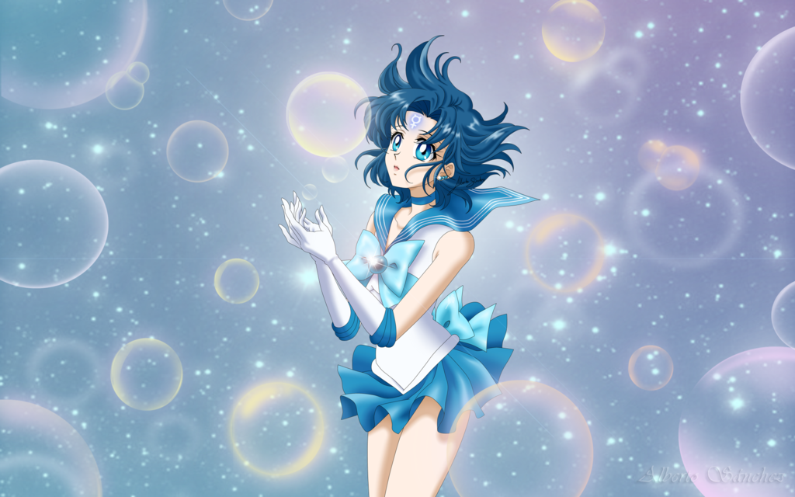

The opening sequence features "Moonlight Legend", written
by Kanako Oda and performed by DALI. The sequence begins with a silhouette of Luna and Sailor
Moon jumping in front of a full moon. They jump away, and various clips of Usagi walking,
running, and becoming Sailor Moon begin as a spinning rose in the center leads to the next clip.
Various white masks on a black background become a cloaked figure wearing one of the masks.
The figure removes the masks and swiftly reveals himself to be Tuxedo Kamen. Floating silhouettes
of Sailor Moon, Sailor Mars, and Sailor Mercury that appear to be mid-transformation move
toward the front, and dissolve into the three senshi in their civilian forms as we circle
around them. Clenching her fists, Queen Beryl appears. Sailor Moon, Mercury, and Mars walk
down a long, wide flight of stairs. Usagi stands in front of the Moon Kingdom castle, when
her compact suddenly flashes, and the scene switches to Sailor Moon and Luna standing in front
of a crescent moon.
Summary
One day as she's running to school from home, a young girl named Usagi
Tsukino
runs into
a cat being tortured by some children. She chases them off and removes a bandage from its
forehead, finding underneath what she calls a "crescent-shaped bald spot". Meanwhile, the
evil Queen Beryl of the Dark Kingdom is planning with her servant, Jadeite, to steal
energy for the Queen Metalia. Jadeite sends a monster named Morga to the diamond shop run by
Usagi's friend Naru's mother, and she drains energy by selling cursed jewelry. After failing
an exam, and later running into Mamoru Chiba, who calls her "bun-head". Later at home the cat
comes and talks to her. It tells her that she is the Pretty Sailor Senshi of Love and Justice,
Sailor Moon. It is her destiny to save the world from the Dark Kingdom. The cat, named Luna,
gives Usagi a magic brooch and tells her to say "Moon Prism Power, Make Up". She does and is
transformed into Sailor Moon. Sailor Moon goes to the jewelry store to save Naru and the others
from Morga. A mysterious masked man named Tuxedo Mask appears to help Sailor Moon, and she throws
her tiara at Morga and says "Moon Tiara Action!" Morga is destroyed, and Jadeite's energy
is lost.
Sailor Moon foils three more of Jadeite's plans, destroying the monsters Fro and Derella,
and releasing some musclemen from Jadeite's control. Usagi meets a girl named Ami whom
Luna suspects to be from the Dark Kingdom, but fighting off an attack from Jadeite's
monster Garoben, Luna realizes that Ami is Sailor Mercury, so she gives her a
transformation pen that, when she says "Mercury Power, Make Up", transforms her into Sailor
Mercury. She weakens Garoben with Sabão Spray and Sailor Moon destroys her.

After Sailor Moon and Sailor Mercury defeat Jadeite's monster Ramua, Sailor Moon goes
aboard a bus that Jadeite's monster Kigaan is taking into another dimension. Rei Hino
discovers Jadeite's intentions so he sends her there as well. Luna gives her a
transformation pen so she can transform into Sailor Mars, and she destroys Kigaan with
Fire Soul. Sailor Mercury stops the black hole from closing, and Tuxedo Mask rescues all the
girls from the dimension.
After the three Sailor Senshi foil two more of Jadeite's plans and destroy his monsters Murid
and Thetis, Queen Beryl threatens to put Jadeite to Eternal Sleep if he fails again. He
challenges the Sailor Senshi to a battle at the airport, but eventually they defeat him and
he is run over by a jet. Beryl puts him into an eternal frozen state and freezes him into
endless darkness (Eternal Sleep). Nephrite becomes her new commander, but Zoisite dislikes
him and wants to have his turn.
Nephrite's plans to gather energy for Queen Metalia involved draining one person's
energy at its peak (as opposed to Jadeite gathering energy from several people at once)
by charging an item close to them with dark energy, and eventually a monster would appear
from the item. However, each of his plans was foiled when Sailor Moon destroys his monsters:
Tesunī, Petasos, Black Widow, Cameran, and Jumo. While he is posing as a millionaire named
Masato Sanjouin, Naru falls in love with him.
After sending a monster named Regulus after Sailor Moon and Tuxedo Mask,
and later attacking them in an elevator shaft, Nephrite discovers Tuxedo Mask's true
identity. After one more of Nephrite's plans is foiled (Castor and Pollux being destroyed
by the Sailor Senshi), Queen Beryl turns her attention to getting the Silver Crystal, and
searches for the Moon Princess. He mistakenly thinks Princess Diamond is the Moon Princess
and implants Soul Shadow in her, but he is driven out, and Sailor Moon destroys him.
Eventually Usagi discovers that Naru is in love with Nephrite, and tries to tell her that
he is evil. The Sailor Senshi fight Nephrite and defeat him. Sailor Moon is about to destroy
him with her tiara when Naru jumps in front of him, forcing Sailor Moon to stop her attack.
Nephrite in turn protects Naru from an attack by Zoisite's monster, Yasha, and Sailor Moon
destroys her with her tiara. When Nephrite, in an attempt to find Sailor Moon, tells Naru
his real name and that he wants to fight alongside the Sailor Senshi, she calls Usagi, and
Nephrite soon discovers (though Naru does not know) that she is Sailor Moon. However, Zoisite
has three monsters, Housenka, Grape, and Suzuran, kidnap Naru, and Nephrite saves her from
them. But the monsters return and Grape stabs Nephrite with thorns from her arm. The Sailor
Senshi destroy all three monsters, but Nephrite dies of his injuries and dissolves into dust.
Queen Beryl gets some energy for the Queen Metalia, who tells her to find the seven Rainbow
Crystals, each of which is inside an earthling, with one of the Seven Great Youma inside it.
Zoisite tracks down the first, Game Machine Joe, who becomes friends with a girl named Makoto
, and extracts the crystal from him, then awakens the shadow within him, transforming him into
Game Machine Man. Luna gives Makoto a transformation pen and she uses it to transform into
Sailor Jupiter. Luna gives Sailor Moon the Moon Stick, and she uses it to heal Joe.
The other six crystal carriers are a boy who can predict the future, Ryo Urawa
(who becomes friends with Ami), an artist named Yumemi Yumeno, Motoki's girlfriend Reika,
Rei's grandpa, and a fat cat named Rhett Butler. One by one, Zoisite extracts their
crystals and transforms them into (respectively) Boxy, Bunbo, Binah, Rikoukeidar, Jiji,
and Bakene. The Sailor Senshi get one of the crystals, Tuxedo Mask gets two, and Zoisite
gets three, bringing his total up to four. All six monsters are healed by Sailor Moon
(killing the shadows within them). Eventually, after fighting off an attack from Akan
(an actor turned into a monster by Zoisite), Sailor Moon is forced to hand her crystal over
to Zoisite, even though she heals the actor.
Queen Beryl's fourth general, Kunzite, who is in love with Zoisite,
goes with him to attack the Sailor Senshi, and he traps them in a dark dome,
while Zoisite impersonates Sailor Moon to trick Tuxedo Mask, and stabs him.
However, he is attacked by Sailor Venus, who then attacks Kunzite, releasing the Sailor
Senshi from the dome. Sailor Venus has with her a talking cat like Luna. His name is Artemis.
Zoisite challenges Mamoru (who is really Tuxedo Mask) to a battle at Starlight Tower
over the crystals. Usagi comes with him, unaware of what Zoisite is going to do. Before
they can fight, Kunzite appears and takes the crystals. Mamoru scratches Zoisite's face.
Despite the fact that Queen Beryl ordered him to take Mamoru alive (so she can turn him to
her side), Zoisite tries to kill him, forcing Usagi to transform into Sailor Moon in front
of him. Mamoru then reveals himself as Tuxedo Mask. Zoisite stabs him with an ice crystal,
nearly killing him. Sailor Moon cries for him, and the seven Rainbow Crystals merge with her
tears to form the Silver Crystal. She is revealed to be the Moon Princess, Princess Serenity,
and Mamoru is Prince Endymion of Earth.
Zoisite attacks Serenity, but she defeats him using Moon Stick, made stronger by the Silver
Crystal. Kunzite captures Mamoru and returns to the Dark Kingdom with Zoisite, whom Queen
Beryl kills with an energy blast from her crystal ball as a punishment for disobeying her.
Queen Metalia begins to turn Mamoru evil. Kunzite attacks the Sailor Senshi, but Sailor
Moon defeats him with Moon Healing Escalation.
Kunzite is assigned the task of finding and destroying Sailor Moon, and getting the Silver
Crystal back from her. He turns several people into monsters, like Mitsuami, Shakoukai,
Blizzar, and Misha and Janelle, but they are all healed by Sailor Moon. Endymion, though he
is now evil, often gets into arguments with Kunzite and even helps the Sailor Senshi out on
a few occasions. Endymion summons the Ancient Creature of the Lake, but she is healed by
Sailor Moon, turning back into the spirit of a girl. Kunzite later tries to recapture the
crystal carriers in the hope that he can revive the Seven Great Youma, but his plan is
foiled by Sailor Moon, who heals Endymion. However, Kunzite recaptures him.
The Sailor Senshi pretend to fight each other so they can find the entrance to
the Dark Kingdom, and fight off Kunzite's monster, Oniwabandana, Sailor Moon
restoring her to her original form. The Sailor Senshi find a tunnel leading to the Dark
Kingdom and fight Kunzite. In the middle of the battle, they are taken back in time, where
Queen Serenity tells them the story: Princess Serenity from the Moon Kingdom was in love
with Prince Endymion from Earth. But Queen Beryl and her followers attacked from the Dark
Kingdom. They killed Princess Serenity, Prince Endymion, and all the Sailor Senshi, so Queen
Serenity was forced to use the Silver Crystal and use up all her power to seal everyone
inside the crystal, and all the Sailor Senshi reborn on Earth. After returning to the present,
they are attacked by Kunzite again, who gets much stronger each time they see him, but Sailor
Moon uses Moon Healing Escalation and reflects one of his own energy blades at him, killing him.
The Sailor Senshi head for the entrance to the Dark Kingdom to fight Queen Beryl, who sends
the DD Girls after them. In the end, the DD Girls and all the Sailor Senshi except Sailor
Moon destroy each other, and Beryl teleports Sailor Moon to the Dark Kingdom to fight Prince
Endymion, who has been turned evil again. Moon Healing Escalation doesn't work, but Sailor
Moon is able to heal him with her orgel, and he injures Queen Beryl. Queen Metalia combines
with Beryl, transforming her into a gigantic form. Sailor Moon fights her and transforms into
Princess Serenity. They enter a beam struggle, and, powered up by the other Sailor Senshi,
Serenity uses Moon Prism Power to completely destroy Beryl and Metalia.
All the Sailor Senshi and Mamoru return to Earth safely, with their memories of being friends
and Sailor Senshi have been erased. They each go on the live their normal lives, but just two
months later, a new enemy arrives, forcing Luna and Artemis to restore the Sailor Senshi's
memories, leading the Sailor Moon R.